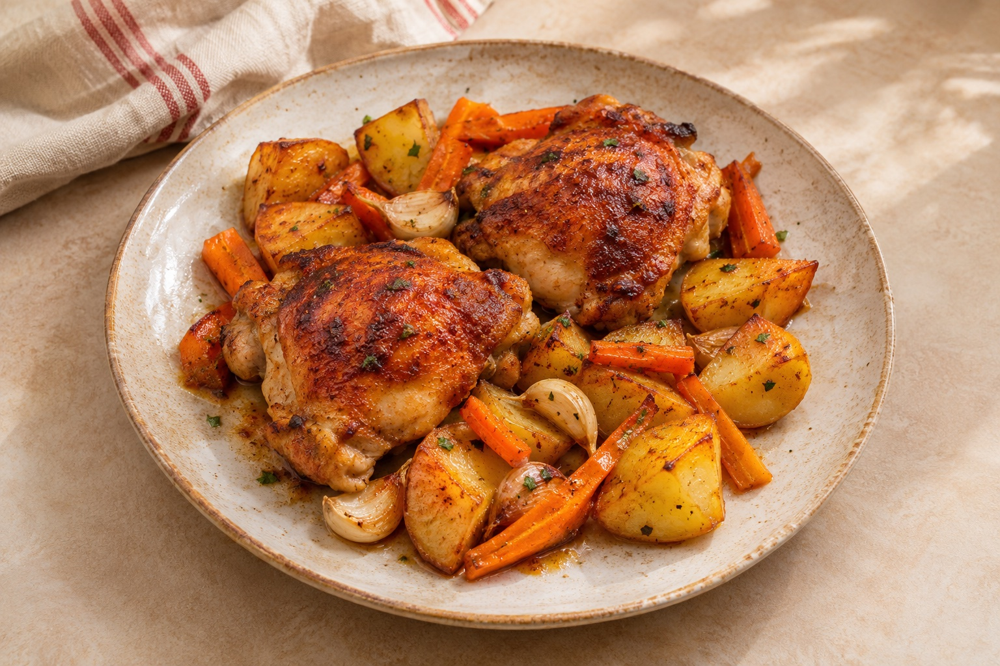

Lundi · Menu validé · 9–15 novembre 2026
Poulet rôti au paprika fumé, pommes de terre et carottes

Image photoréaliste générée par IA.
Calories et prix estimés, prix non vérifiés en magasin.
Ingrédients
- 500 g de hauts de cuisse de poulet
- 600 g de pommes de terre
- 400 g de carottes
- 1 c. à soupe d’huile d’olive
- 1 c. à café de paprika fumé
- 2 gousses d’ail
- Sel et poivre
Matériel
Four à chaleur tournante, plaque, couteau, planche
Préparation pas à pas
- Préchauffer le four à 200 °C en chaleur tournante.
- Laver les pommes de terre, les couper en morceaux réguliers. Éplucher les carottes et les tailler en bâtonnets.
- Sur une plaque, mélanger les légumes avec l’huile, l’ail écrasé, le paprika, du sel et du poivre.
- Poser le poulet sur les légumes, assaisonner et enfourner au moins 45 minutes pour des hauts de cuisse avec os et peau, puis prolonger si nécessaire selon leur taille et la température à cœur. Remuer les légumes à mi-cuisson.
- Vérifier que le poulet est bien cuit à cœur (74 °C au centre), prolonger la cuisson si nécessaire. Servir chaud.
Astuce
Préparez et pesez les ingrédients avant de commencer. Les temps sont indicatifs : adaptez-les à la taille des morceaux et à votre matériel.